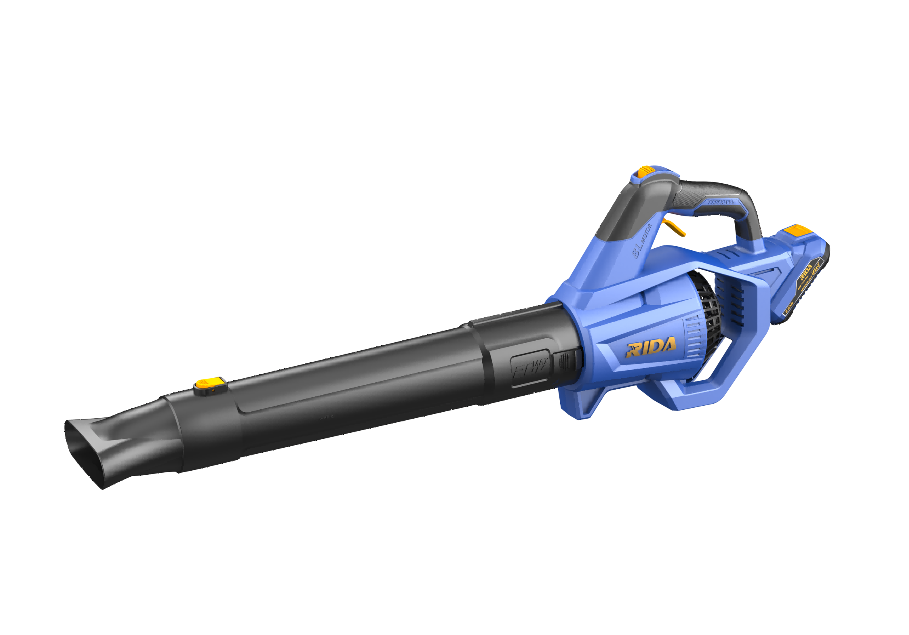

RIDA
Kit Soprador 650
Kit de soprador sem fio RIDA para limpeza de folhas e resíduos.
Voltage20V
No-load Speed18500rpm
Maximum Air Volume650m3/h
Maximum Air Speed126 km/h

Kit de soprador sem fio RIDA para limpeza de folhas e resíduos.